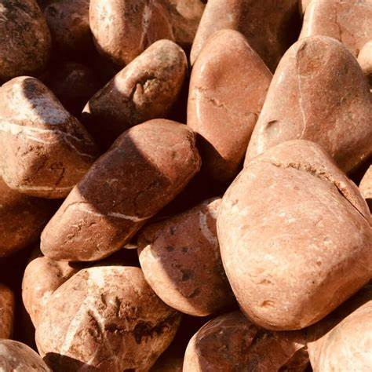

Color intenso
 Tono cálido
Tono cálidoLa apariencia, tono y forma pueden variar ligeramente por tratarse de un material natural.
Piedra de tonos beige suaves y naturales, adecuada para espacios que buscan una apariencia cálida, limpia y elegante.
El precio mostrado corresponde a la configuración seleccionada. Para cantidades mayores, transporte o condiciones especiales, solicita una cotización.
Una piedra versátil para incorporar textura natural en distintos tipos de espacios y proyectos.